Changes in PRIMAP-hist v2.5.1_final compared to v2.5_final for Albania
2024-02-29
Johannes Gütschow
Change analysis for Albania for PRIMAP-hist v2.5.1_final compared to v2.5_final
Overview over emissions by sector and gas
The following figures show the aggregate national total emissions excluding LULUCF AR6GWP100 for the country reported priority scenario. The dotted linesshow the v2.5_final data.
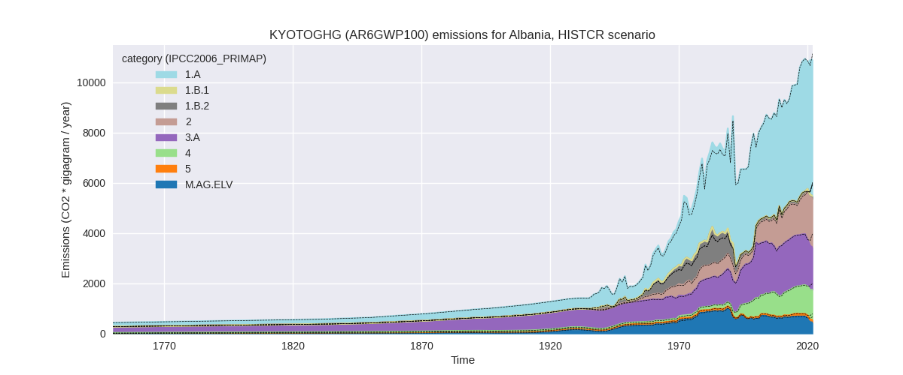
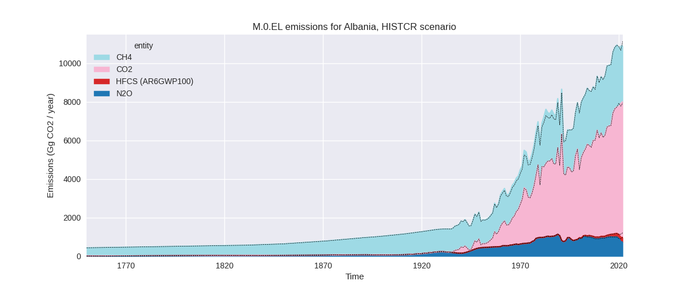
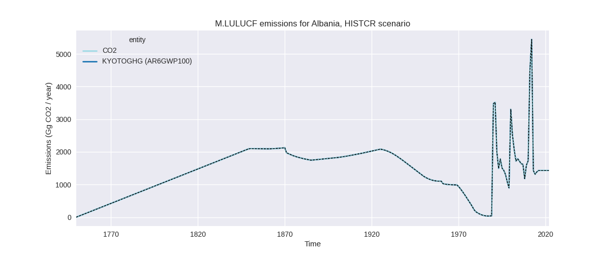
The following figures show the aggregate national total emissions excluding LULUCF AR6GWP100 for the third party priority scenario. The dotted linesshow the v2.5_final data.
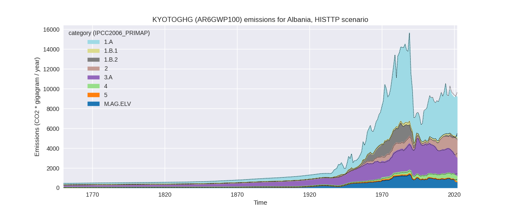
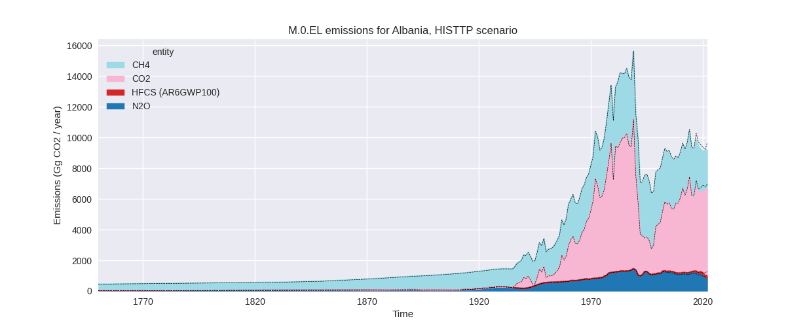
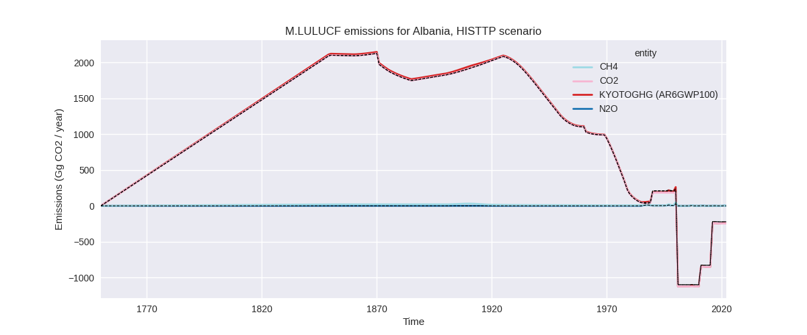
Overview over changes
In the country reported priority scenario we have the following changes for aggregate Kyoto GHG and national total emissions excluding LULUCF (M.0.EL):
- Emissions in 2022 have changed by -2.1%% (-230.83 Gg CO2 / year)
- Emissions in 1990-2022 have changed by 0.1%% (11.89 Gg CO2 / year)
In the third party priority scenario we have the following changes for aggregate Kyoto GHG and national total emissions excluding LULUCF (M.0.EL):
- Emissions in 2022 have changed by -4.9%% (-471.79 Gg CO2 / year)
- Emissions in 1990-2022 have changed by -1.4%% (-124.21 Gg CO2 / year)
Most important changes per scenario and time frame
In the country reported priority scenario the following sector-gas combinations have the highest absolute impact on national total KyotoGHG (AR6GWP100) emissions in 2022 (top 5):
- 1: 1.A, CO2 with 315.60 Gg CO2 / year (6.3%)
- 2: 3.A, CH4 with -310.11 Gg CO2 / year (-16.4%)
- 3: M.AG.ELV, N2O with -217.97 Gg CO2 / year (-34.4%)
- 4: 1.B.2, CH4 with 24.45 Gg CO2 / year (34.8%)
- 5: 4, CH4 with -22.48 Gg CO2 / year (-2.0%)
In the country reported priority scenario the following sector-gas combinations have the highest absolute impact on national total KyotoGHG (AR6GWP100) emissions in 1990-2022 (top 5):
- 1: 1.B.2, CH4 with 21.44 Gg CO2 / year (13.6%)
- 2: 1.A, CO2 with 13.39 Gg CO2 / year (0.3%)
- 3: M.AG.ELV, N2O with -11.85 Gg CO2 / year (-1.9%)
- 4: 3.A, CH4 with -10.58 Gg CO2 / year (-0.6%)
- 5: 2, CO2 with 1.80 Gg CO2 / year (0.2%)
In the third party priority scenario the following sector-gas combinations have the highest absolute impact on national total KyotoGHG (AR6GWP100) emissions in 2022 (top 5):
- 1: 3.A, CH4 with -287.42 Gg CO2 / year (-14.5%)
- 2: M.AG.ELV, N2O with -251.92 Gg CO2 / year (-33.2%)
- 3: 1.B.1, CH4 with 69.05 Gg CO2 / year (122.7%)
- 4: 1.A, CO2 with -47.94 Gg CO2 / year (-1.2%)
- 5: 2, CO2 with 31.35 Gg CO2 / year (2.0%)
In the third party priority scenario the following sector-gas combinations have the highest absolute impact on national total KyotoGHG (AR6GWP100) emissions in 1990-2022 (top 5):
- 1: 2, CO2 with -45.56 Gg CO2 / year (-6.4%)
- 2: 1.A, CO2 with -44.35 Gg CO2 / year (-1.3%)
- 3: 1.B.2, CH4 with -35.03 Gg CO2 / year (-14.7%)
- 4: M.AG.ELV, CO2 with 10.41 Gg CO2 / year (30.1%)
- 5: 3.A, CH4 with -9.99 Gg CO2 / year (-0.4%)
Notes on data changes
No country specific notes present for this changelog.
Changes by sector and gas
For each scenario and time frame the changes are displayed for all individual sectors and all individual gases. In the sector plot we use aggregate Kyoto GHGs in AR6GWP100. In the gas plot we usenational total emissions without LULUCF. ## country reported scenario
2022
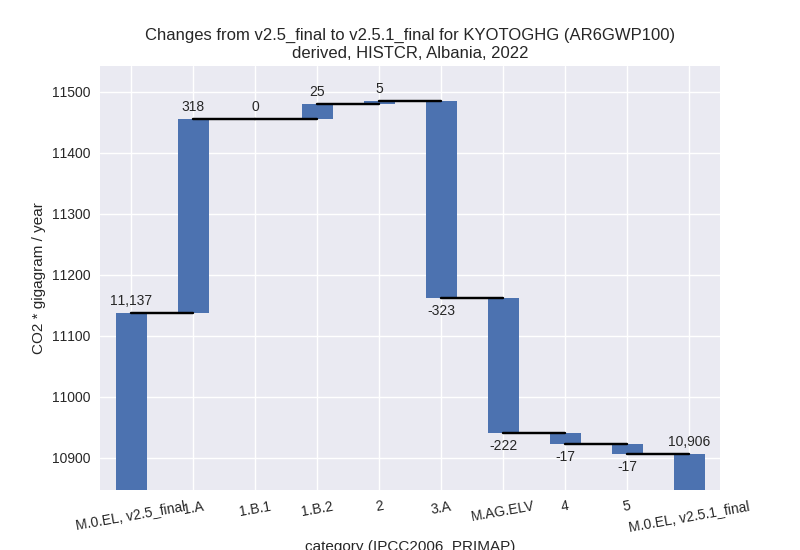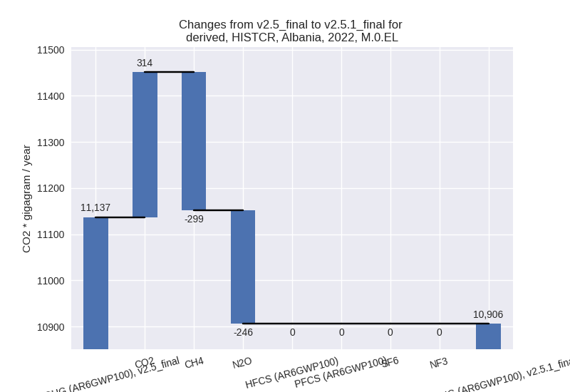
1990-2022
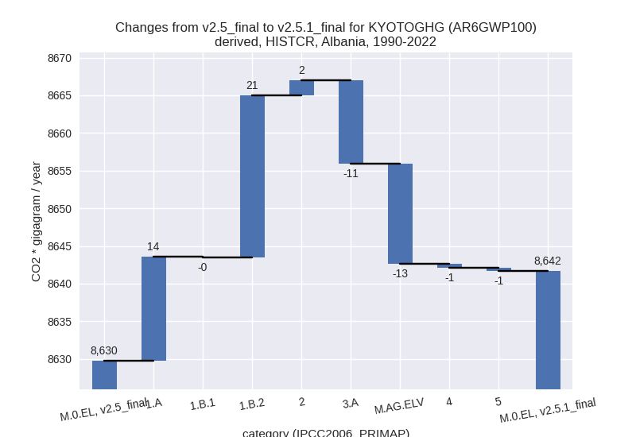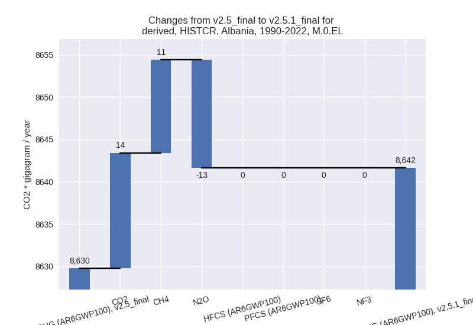
third party scenario
2022
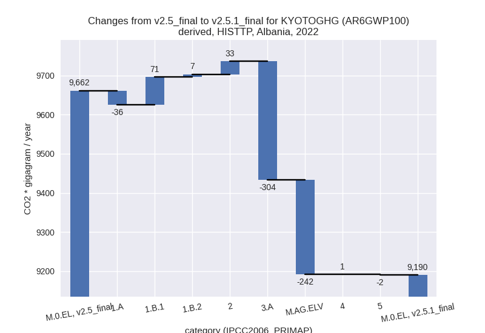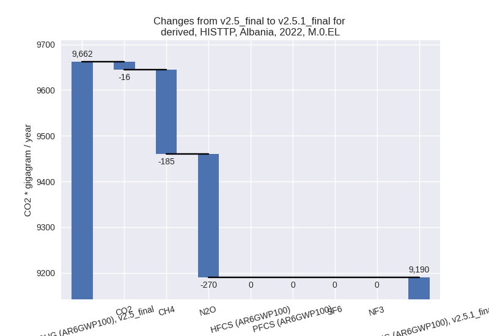
1990-2022
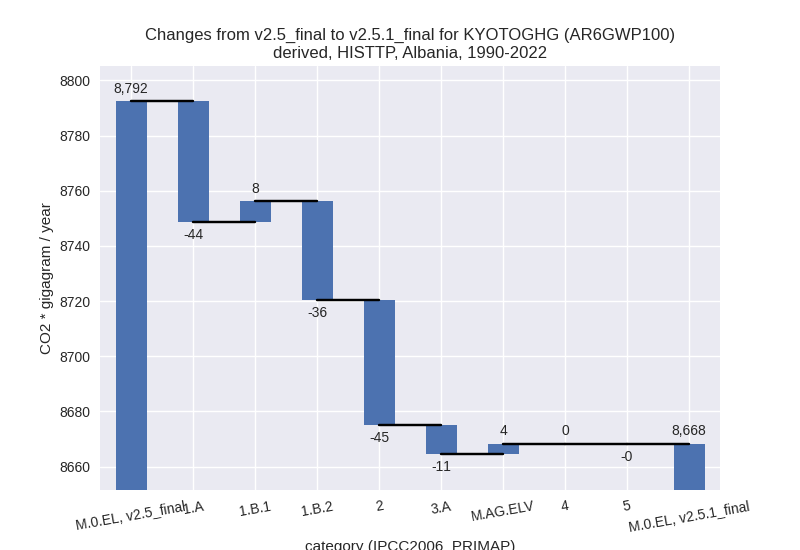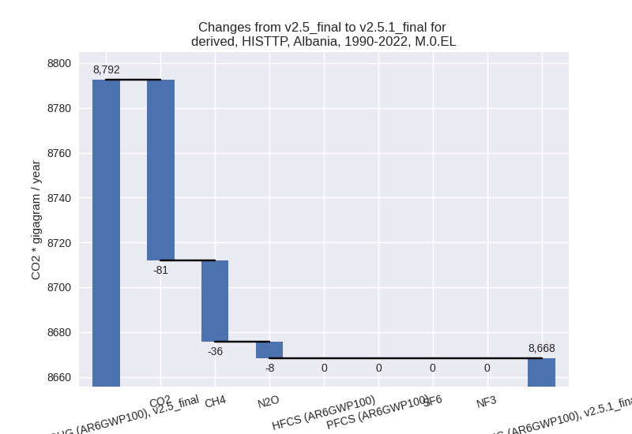
Detailed changes for the scenarios:
country reported scenario (HISTCR):
Most important changes per time frame
For 2022 the following sector-gas combinations have the highest absolute impact on national total KyotoGHG (AR6GWP100) emissions in 2022 (top 5):
- 1: 1.A, CO2 with 315.60 Gg CO2 / year (6.3%)
- 2: 3.A, CH4 with -310.11 Gg CO2 / year (-16.4%)
- 3: M.AG.ELV, N2O with -217.97 Gg CO2 / year (-34.4%)
- 4: 1.B.2, CH4 with 24.45 Gg CO2 / year (34.8%)
- 5: 4, CH4 with -22.48 Gg CO2 / year (-2.0%)
For 1990-2022 the following sector-gas combinations have the highest absolute impact on national total KyotoGHG (AR6GWP100) emissions in 1990-2022 (top 5):
- 1: 1.B.2, CH4 with 21.44 Gg CO2 / year (13.6%)
- 2: 1.A, CO2 with 13.39 Gg CO2 / year (0.3%)
- 3: M.AG.ELV, N2O with -11.85 Gg CO2 / year (-1.9%)
- 4: 3.A, CH4 with -10.58 Gg CO2 / year (-0.6%)
- 5: 2, CO2 with 1.80 Gg CO2 / year (0.2%)
Changes in the main sectors for aggregate KyotoGHG (AR6GWP100) are
- 1: Total sectoral emissions in 2022 are 5533.79 Gg
CO2 / year which is 50.7% of M.0.EL emissions. 2022 Emissions have
changed by 6.6% (342.75 Gg CO2 /
year). 1990-2022 Emissions have changed by 0.8% (35.20 Gg CO2 / year). For 2022 the
changes per gas
are:
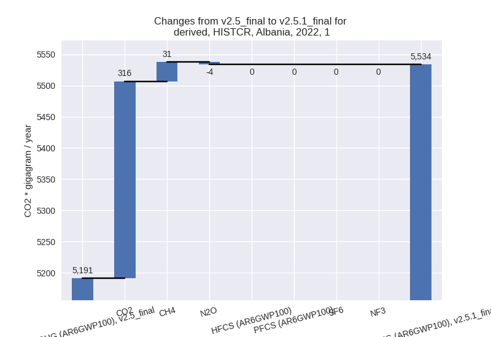
The changes come from the following subsectors:- 1.A: Total sectoral emissions in 2022 are 5432.73
Gg CO2 / year which is 98.2% of category 1 emissions. 2022 Emissions
have changed by 6.2% (318.08 Gg CO2
/ year). 1990-2022 Emissions have changed by 0.3% (13.81 Gg CO2 / year). For 2022 the
changes per gas
are:

There is no subsector information available in PRIMAP-hist. - 1.B.1: Total sectoral emissions in 2022 are 3.62 Gg CO2 / year which is 0.1% of category 1 emissions. 2022 Emissions have changed by 1.3% (0.04 Gg CO2 / year). 1990-2022 Emissions have changed by -1.1% (-0.06 Gg CO2 / year).
- 1.B.2: Total sectoral emissions in 2022 are 97.44
Gg CO2 / year which is 1.8% of category 1 emissions. 2022 Emissions have
changed by 33.8% (24.62 Gg CO2 /
year). 1990-2022 Emissions have changed by 13.3% (21.44 Gg CO2 / year). For 2022 the
changes per gas
are:
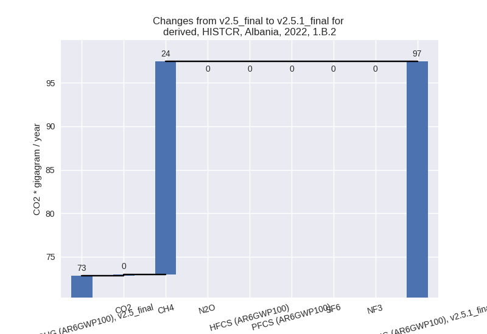
For 1990-2022 the changes per gas are:
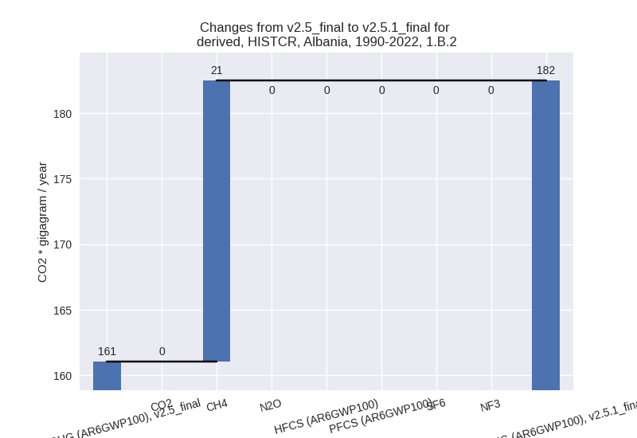
There is no subsector information available in PRIMAP-hist.
- 1.A: Total sectoral emissions in 2022 are 5432.73
Gg CO2 / year which is 98.2% of category 1 emissions. 2022 Emissions
have changed by 6.2% (318.08 Gg CO2
/ year). 1990-2022 Emissions have changed by 0.3% (13.81 Gg CO2 / year). For 2022 the
changes per gas
are:
- 2: Total sectoral emissions in 2022 are 1947.16 Gg CO2 / year which is 17.9% of M.0.EL emissions. 2022 Emissions have changed by 0.2% (4.83 Gg CO2 / year). 1990-2022 Emissions have changed by 0.2% (2.02 Gg CO2 / year).
- M.AG: Total sectoral emissions in 2022 are 2123.59
Gg CO2 / year which is 19.5% of M.0.EL emissions. 2022 Emissions have
changed by -20.4% (-544.37 Gg CO2 /
year). 1990-2022 Emissions have changed by -1.0% (-24.30 Gg CO2 / year). For 2022 the
changes per gas
are:
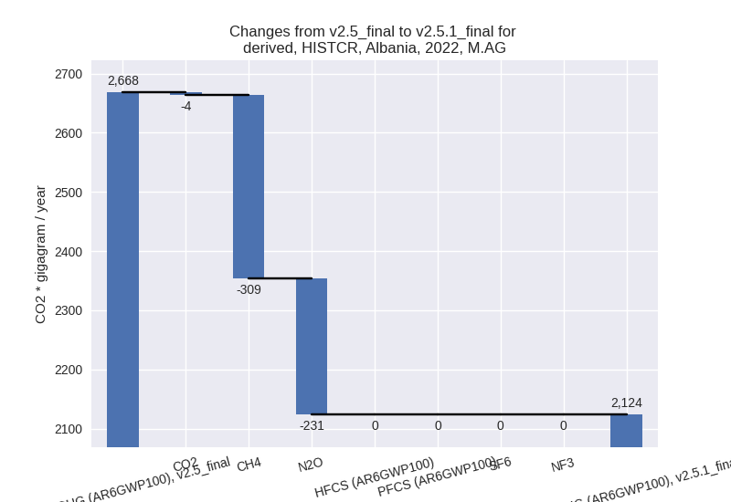
The changes come from the following subsectors:- 3.A: Total sectoral emissions in 2022 are 1675.31
Gg CO2 / year which is 78.9% of category M.AG emissions. 2022 Emissions
have changed by -16.1% (-322.66 Gg
CO2 / year). 1990-2022 Emissions have changed by -0.6% (-11.01 Gg CO2 / year). For 2022 the
changes per gas
are:
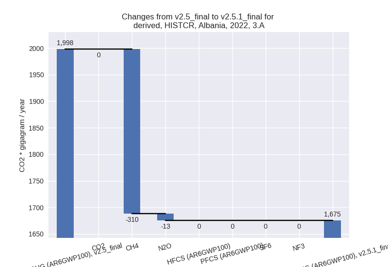
There is no subsector information available in PRIMAP-hist. - M.AG.ELV: Total sectoral emissions in 2022 are
448.28 Gg CO2 / year which is 21.1% of category M.AG emissions. 2022
Emissions have changed by -33.1%
(-221.71 Gg CO2 / year). 1990-2022 Emissions have changed by -2.0% (-13.29 Gg CO2 / year). For 2022 the
changes per gas
are:
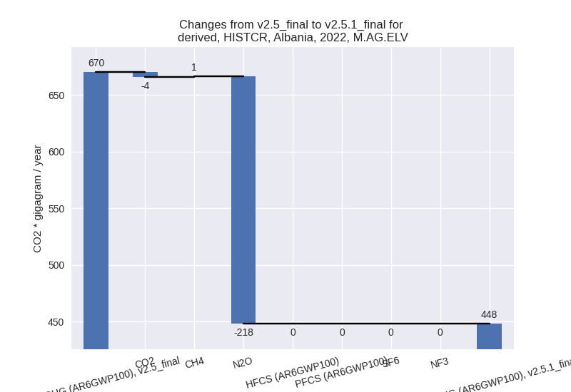
For 1990-2022 the changes per gas are:
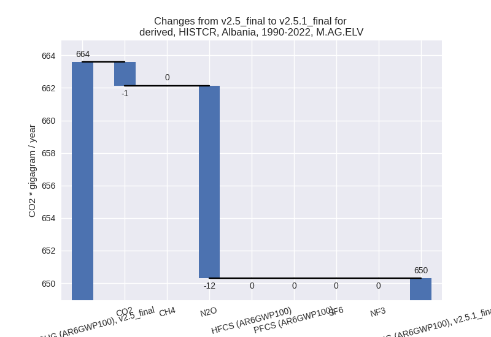
There is no subsector information available in PRIMAP-hist.
- 3.A: Total sectoral emissions in 2022 are 1675.31
Gg CO2 / year which is 78.9% of category M.AG emissions. 2022 Emissions
have changed by -16.1% (-322.66 Gg
CO2 / year). 1990-2022 Emissions have changed by -0.6% (-11.01 Gg CO2 / year). For 2022 the
changes per gas
are:
- 4: Total sectoral emissions in 2022 are 1196.78 Gg CO2 / year which is 11.0% of M.0.EL emissions. 2022 Emissions have changed by -1.4% (-17.33 Gg CO2 / year). 1990-2022 Emissions have changed by -0.1% (-0.53 Gg CO2 / year).
- 5: Total sectoral emissions in 2022 are 104.76 Gg
CO2 / year which is 1.0% of M.0.EL emissions. 2022 Emissions have
changed by -13.8% (-16.71 Gg CO2 /
year). 1990-2022 Emissions have changed by -0.7% (-0.51 Gg CO2 / year). For 2022 the
changes per gas
are:
third party scenario (HISTTP):
Most important changes per time frame
For 2022 the following sector-gas combinations have the highest absolute impact on national total KyotoGHG (AR6GWP100) emissions in 2022 (top 5):
- 1: 3.A, CH4 with -287.42 Gg CO2 / year (-14.5%)
- 2: M.AG.ELV, N2O with -251.92 Gg CO2 / year (-33.2%)
- 3: 1.B.1, CH4 with 69.05 Gg CO2 / year (122.7%)
- 4: 1.A, CO2 with -47.94 Gg CO2 / year (-1.2%)
- 5: 2, CO2 with 31.35 Gg CO2 / year (2.0%)
For 1990-2022 the following sector-gas combinations have the highest absolute impact on national total KyotoGHG (AR6GWP100) emissions in 1990-2022 (top 5):
- 1: 2, CO2 with -45.56 Gg CO2 / year (-6.4%)
- 2: 1.A, CO2 with -44.35 Gg CO2 / year (-1.3%)
- 3: 1.B.2, CH4 with -35.03 Gg CO2 / year (-14.7%)
- 4: M.AG.ELV, CO2 with 10.41 Gg CO2 / year (30.1%)
- 5: 3.A, CH4 with -9.99 Gg CO2 / year (-0.4%)
Changes in the main sectors for aggregate KyotoGHG (AR6GWP100) are
- 1: Total sectoral emissions in 2022 are 4371.32 Gg CO2 / year which is 47.6% of M.0.EL emissions. 2022 Emissions have changed by 1.0% (41.30 Gg CO2 / year). 1990-2022 Emissions have changed by -1.8% (-72.09 Gg CO2 / year).
- 2: Total sectoral emissions in 2022 are 1833.38 Gg
CO2 / year which is 19.9% of M.0.EL emissions. 2022 Emissions have
changed by 1.9% (33.41 Gg CO2 /
year). 1990-2022 Emissions have changed by -5.7% (-45.34 Gg CO2 / year). For
1990-2022 the changes per gas
are:
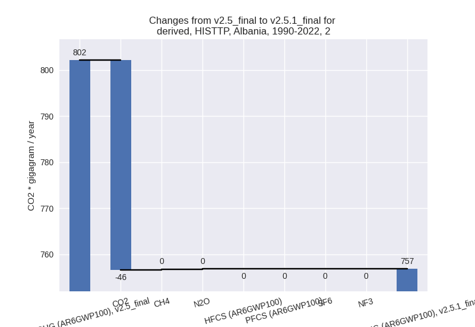 - M.AG: Total sectoral emissions in 2022 are 2379.33
Gg CO2 / year which is 25.9% of M.0.EL emissions. 2022 Emissions have
changed by -18.6% (-545.37 Gg CO2 /
year). 1990-2022 Emissions have changed by -0.2% (-6.74 Gg CO2 / year). For 2022 the
changes per gas
are:
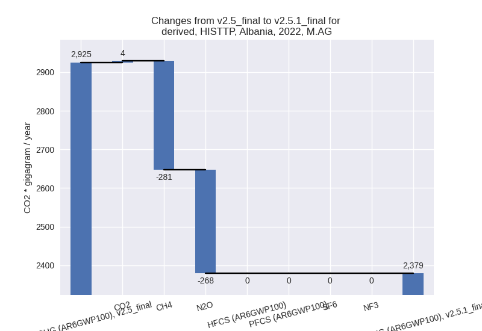
The changes come from the following subsectors:- 3.A: Total sectoral emissions in 2022 are 1797.55
Gg CO2 / year which is 75.5% of category M.AG emissions. 2022 Emissions
have changed by -14.5% (-303.68 Gg
CO2 / year). 1990-2022 Emissions have changed by -0.4% (-10.53 Gg CO2 / year). For 2022 the
changes per gas
are:
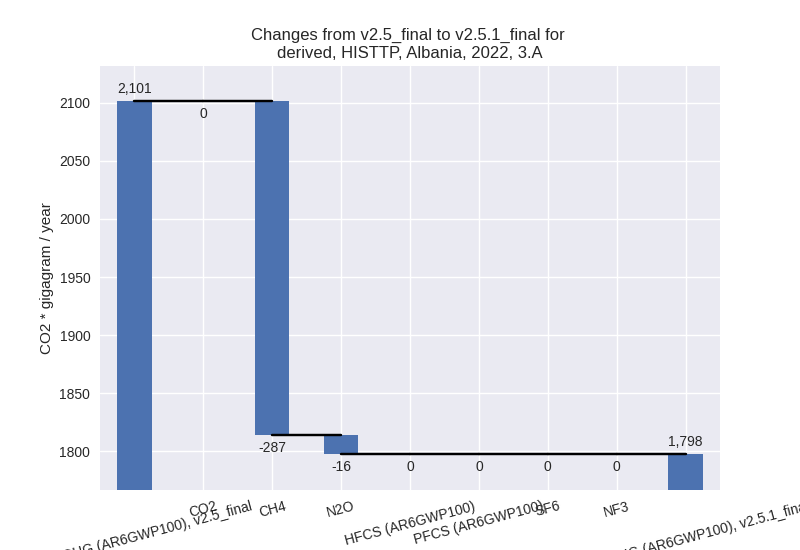
There is no subsector information available in PRIMAP-hist. - M.AG.ELV: Total sectoral emissions in 2022 are
581.77 Gg CO2 / year which is 24.5% of category M.AG emissions. 2022
Emissions have changed by -29.4%
(-241.69 Gg CO2 / year). 1990-2022 Emissions have changed by 0.4% (3.79 Gg CO2 / year). For 2022 the
changes per gas
are:
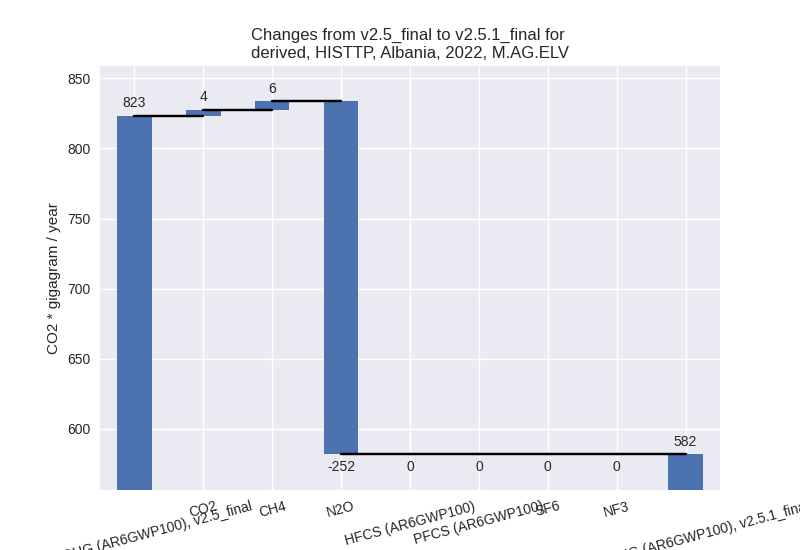
There is no subsector information available in PRIMAP-hist.
- 3.A: Total sectoral emissions in 2022 are 1797.55
Gg CO2 / year which is 75.5% of category M.AG emissions. 2022 Emissions
have changed by -14.5% (-303.68 Gg
CO2 / year). 1990-2022 Emissions have changed by -0.4% (-10.53 Gg CO2 / year). For 2022 the
changes per gas
are:
- 4: Total sectoral emissions in 2022 are 572.73 Gg CO2 / year which is 6.2% of M.0.EL emissions. 2022 Emissions have changed by 0.1% (0.70 Gg CO2 / year). 1990-2022 Emissions have changed by 0.0% (0.02 Gg CO2 / year).
- 5: Total sectoral emissions in 2022 are 33.18 Gg
CO2 / year which is 0.4% of M.0.EL emissions. 2022 Emissions have
changed by -5.2% (-1.82 Gg CO2 /
year). 1990-2022 Emissions have changed by -0.2% (-0.05 Gg CO2 / year). For 2022 the
changes per gas
are: